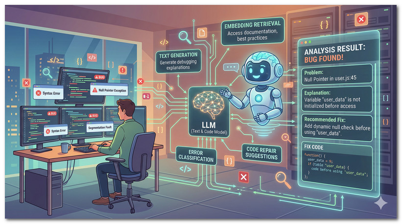

二、如何將線上 Online Judge 加上 AI 程式碼分析
將 AI 程式碼分析整合到傳統 Online Judge (OJ) 系統，可以將 OJ 從單純的「對錯評判工具」
升級為「專屬虛擬助教」，提升學生學習效率並減輕教學負擔。
以下從四個層面說明整合策略：
1. AI 介入的時機與功能
| 評測狀態 | AI 功能 |
|---|
| CE / RTE 編譯 / 執行期錯誤 |
讀取編譯器報錯訊息與程式碼，用白話解釋錯誤原因，例如：「你的陣列可能越界，請檢查第 15 行的 for 迴圈條件」。 |
| WA / TLE 答案錯誤 / 超時 |
比較程式碼邏輯與題目要求，提供 提示（Hints） 而非直接給答案，例如指出邊界條件未處理或演算法複雜度過高。 |
| AC 完全正確後的 Code Review |
分析時間 / 空間複雜度、命名慣例（Clean Code），建議更優雅的寫法，教導使用語言特性或標準函式庫。 |

圖：AI 程式碼診斷系統架構示意（LLM 整合 Embedding Retrieval、Error Classification 與 Code Repair Suggestions）
2. 系統架構設計（非同步）
AI 推論通常需要幾秒鐘，絕對不能阻塞 OJ 評判核心（Judge Core），
因此採用非同步（Asynchronous）架構：
前端
「請求 AI 分析」按鈕
→
後端 API
打包分析請求
→
任務佇列
Redis + Celery
→
Worker
呼叫 LLM API
→
前端回傳
SSE / WebSocket
- 前端：在提交結果頁加入「請求 AI 助教分析」按鈕；建議手動觸發，或設定每題求救次數上限以節省 API 成本。
- LLM 選擇（雲端）：Google Gemini Pro、OpenAI GPT-4o，能力最強，適合複雜邏輯分析。
- LLM 選擇（地端）：考量學術單位隱私與長期維運成本，可部署開源模型（Llama 3 8B/70B、Qwen）於自有 GPU 伺服器。
- 即時回傳：透過 SSE 或 WebSocket 接收 AI 串流（Streaming）回覆，提升使用者體驗。
3. 核心關鍵：Prompt Engineering（提示工程）
要讓 AI 成為合格的「助教」，必須在後端封裝嚴謹的 System Prompt，
避免 AI 直接給出完整解答。以下為教育型 OJ 的 Prompt 結構範例：
[System Role]
你是一位資深的計算機科學教授與程式設計助教。
你的任務是引導學生思考，而不是直接給他們解答。
[Context]
題目描述：{problem_description}
學生的程式碼：{student_code}
程式語言：{language}
系統評判結果：{judge_status}
錯誤訊息/測資輸出差異：{error_logs}
[Instructions]
1. 請分析學生程式碼中的邏輯錯誤或效能瓶頸。
2. 絕對不允許直接輸出完整的正確程式碼。
3. 請用繁體中文回答。
4. 提供 1 到 2 個具體的思考方向或提示，引導學生自行修正。
5. 若有發現變數命名或縮排等不良習慣，請在最後溫和地提醒。
4. 教育考量
- AI 的角色定位為「引導者」而非「解題機」，保護學生的學習歷程。
- 可依課程需求設定 AI 介入的開放時間（例如作業截止後才開放完整分析）。
- 收集學生常見錯誤類型，長期優化 Prompt 與診斷策略。